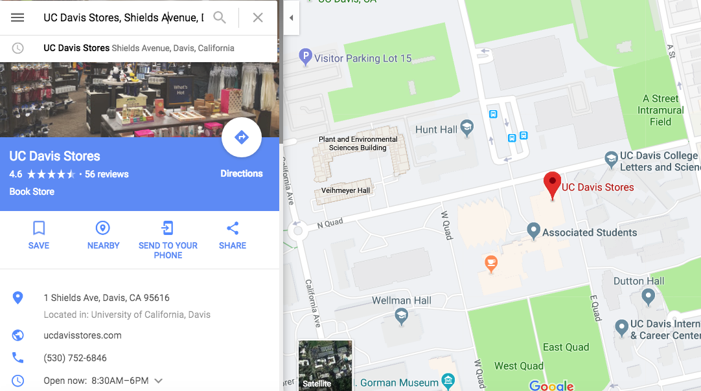
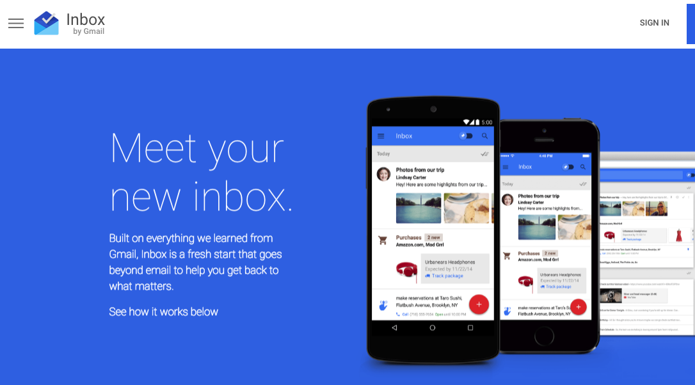
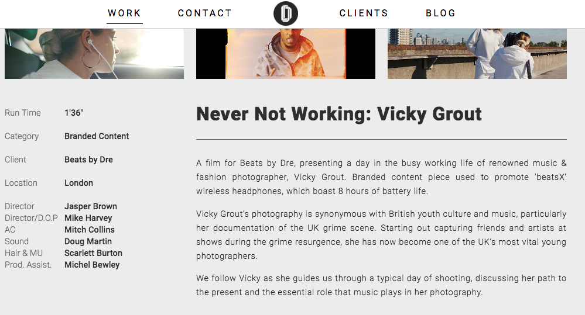
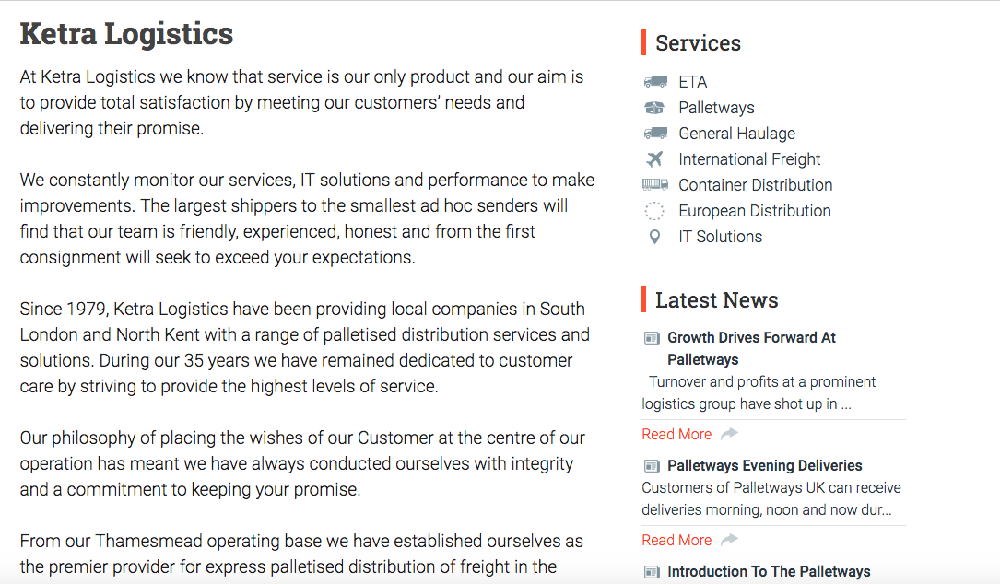

Roboto
In Google Fonts, one of the many popular web fonts used is called Roboto. Christian Robertson created Roboto. It was created in 2011. Roboto is a san-serif, geometric typeface. Roboto is a huge type family with 12 styles. There are other Roboto type family fonts that are other versions of the font such as Roboto Condensed and Roboto Mono, which has 10 different styles. The typeface features friendly and open curves. Some of the letterforms have a distortion to force a rigid rhythm, which allows letters to be settled into their natural width. By this, it makes the typeface have a more natural reading rhythm.
The natural flow of the letters together, makes it easier for the user to read on the web. Roboto is used for body copy in the web, but the websites that uses it, are websites that doesn’t contain a long page full of text. The personality this font gives is that it gives out a modern or futuristic look. Many of the websites that uses this font are technology based. Roboto is mostly used in Google applications, such as Google Maps, Google Inbox, and is given as a typeface option in Google Docs. There are also other websites from around the world that uses Roboto such as Dosed and Ketra, which are both from the UK. All of these websites, except for Google Docs, contain minimal text, ranging from a couple sentences to 3-5 small paragraphs. Google uses the font effectively because of the simplicity look of the font. It’s a legible font that can be read through the screen whether a person is using a phone or a computer. It is used more for functionality and basic information more than for reading articles.
What I like about this font is that it’s clear and simple. It’s a direct font. What I dislike about it is that I prefer serif fonts when it comes to paragraphs of text. For Dosed and Ketra, for the smaller parts of the website, the font works because of the design their websites, but when it comes to the descriptions and paragraphs, it looks too “blog post-y” for me. As the font increases in size, especially in Ketra where it uses it in a larger font size, it seems a bit childish looking and more for blogging rather than for a logistics company.
   